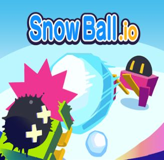
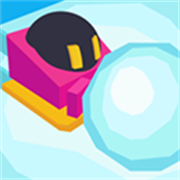
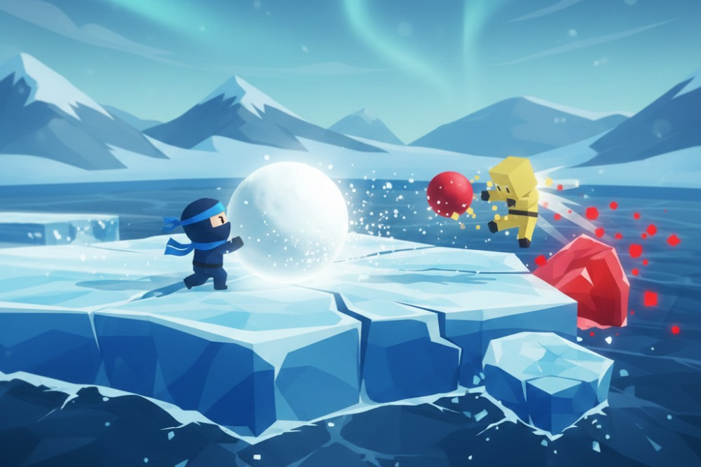

Introduction
A Slithery Snake and Snowball.io is a winter-themed multiplayer arena game where you control a colorful snake sliding across a frozen landscape, collecting glowing snowballs to grow longer and dominate the leaderboard. Unlike traditional snake games, this snowy variant combines the addictive growth mechanics with competitive multiplayer action in a crisp, icy arena. What makes this game special is its perfect blend of simple controls with strategic depth—easy to pick up but challenging to master. Players love the satisfying feeling of watching their snake grow with each snowball collected, the tension of dodging other players' bodies, and the excitement of consuming fallen opponents' remains. The winter theme adds visual charm with frosty colors, snow-capped visuals, and icy particle effects that make every match feel festive and engaging.
Getting Started

To start playing A Slithery Snake and Snowball.io, simply visit the official website and click the play button—no registration required. Your snake automatically moves forward, so your only control is steering using your mouse cursor (on desktop) or your finger (on mobile devices). Your goal is to guide your snake toward the glowing snowballs scattered across the arena and consume them to grow longer. Each snowball adds one segment to your tail, making navigation progressively trickier. Watch out for the dark outlines of other snakes—touching any part of their body instantly ends your run and explodes your snake into harvestable snowballs for nearby competitors. The map boundary appears as a frost-like barrier; crossing it deals damage over time. Start by collecting scattered snowballs in quiet areas, then move toward higher-traffic zones as you gain confidence.
Basic Tips
First, prioritize survival over size—staying alive with a medium-length snake beats starting over repeatedly after aggressive plays. Second, use the arena's edges strategically as safe zones where other players cannot approach from behind, though be cautious of the frost barrier. Third, observe other snakes' movement patterns before committing to any path; many players fall into predictable circular routes that you can exploit. Fourth, when another snake dies nearby, rush to collect their scattered snowballs quickly before competitors arrive—this provides massive growth with minimal risk. Fifth, on mobile, enable full-screen mode for better visibility and fewer accidental touches that could disrupt your controls during critical moments.
Advanced Strategies

The encirclement technique involves luring larger snakes into tight spaces by appearing vulnerable, then suddenly curving behind them to force a collision with their own tail. Practice split-second turns to execute this reliably. Zone control is another powerful approach: claim a productive area of the map by making repeated circular passes that block smaller snakes while collecting incoming snowballs. Watch for mass-death events when multiple large snakes collide simultaneously—the resulting snowball explosion can instantly make you the longest snake if you position correctly beforehand. Finally, master the art of the phantom boost: briefly exiting the visible play area forces your snake to turn sharply along the boundary, creating unpredictable movements that opponents cannot anticipate.
Pro Tips

High-level play requires reading the entire battlefield, not just your immediate surroundings—track where the longest snakes are heading and anticipate which zones will become dangerous or lucrative in the next ten seconds. Memorize spawn patterns for premium snowball clusters that appear periodically in fixed locations; securing even two of these provides a decisive early-game advantage. Psychological warfare matters: intentionally following another player closely can make them panic and make mistakes, even without making direct contact. Finally, recognize when to abandon a game gracefully—if multiple top-ranked snakes converge on your position with no escape route, accepting death and joining a fresh match often yields better long-term results than desperate, low-probability survival attempts.
Conclusion
A Slithery Snake and Snowball.io delivers addictive competitive gameplay wrapped in a charming winter aesthetic that's perfect for quick gaming sessions. Master the fundamentals of movement and survival first, then gradually incorporate advanced strategies as your confidence grows. The winter arena provides an ideal training ground for developing quick reflexes and spatial awareness. Ready to slither into action? Visit https://a-slithery-snake-and-snowball.io/ and start your journey toward becoming the longest snake in the frozen arena!